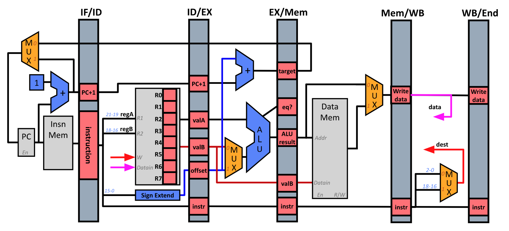

pipelined mips processor simulator

overview
this project implements a MIPS-like processor simulator in C that models a classic five-stage pipeline (IF, ID, EX, MEM, WB) with integrated cache memory support. the simulator incorporates hardware-accurate mechanisms for data and control hazard detection, including forwarding paths and pipeline stalling, to preserve correctness while maximizing instruction throughput.
by simulating cycle-by-cycle pipeline behavior and memory interactions, the design enables detailed analysis of instruction flow, hazard resolution, and cache effects on performance, providing hands-on insight into the microarchitectural tradeoffs of pipelined processor design.
tools
- C/C++, make, bash